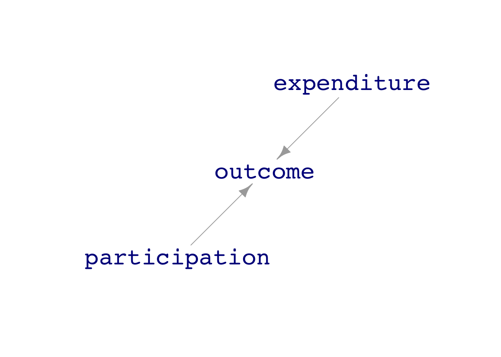
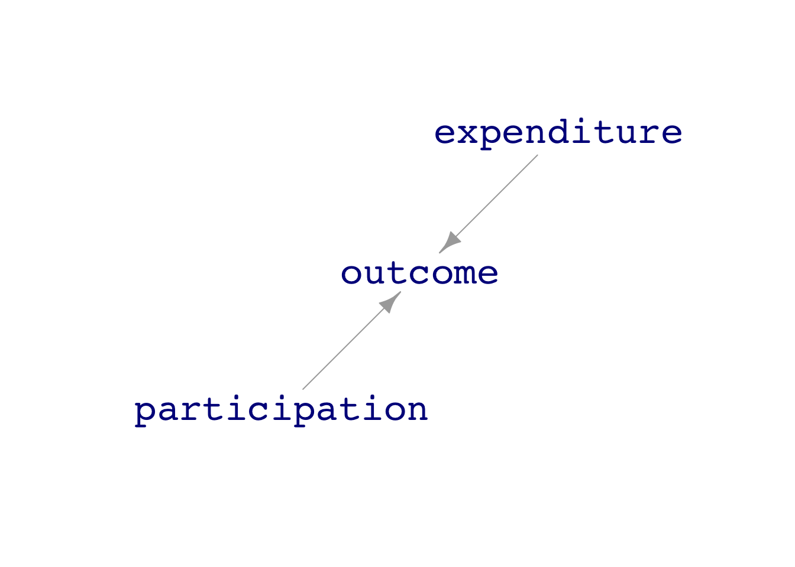
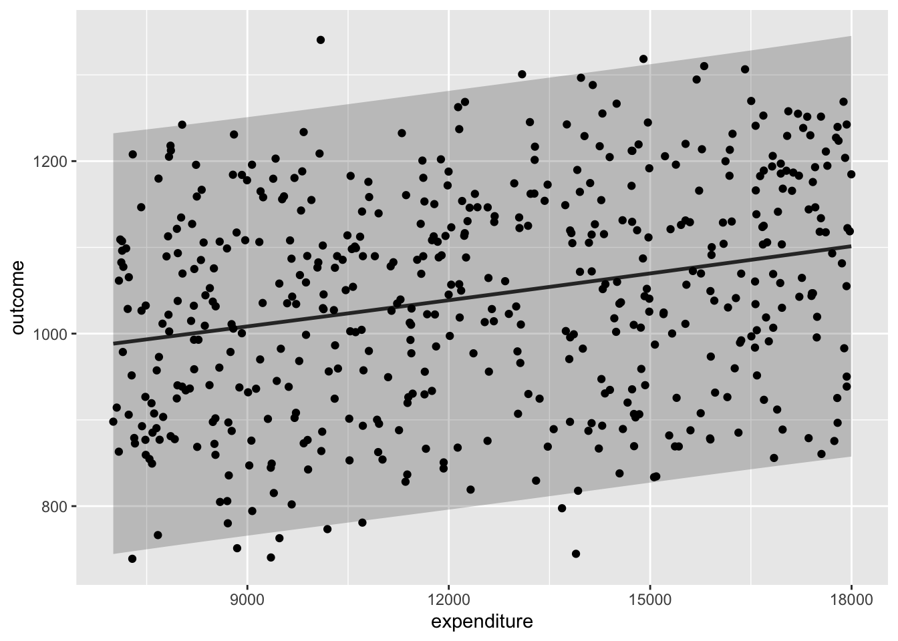
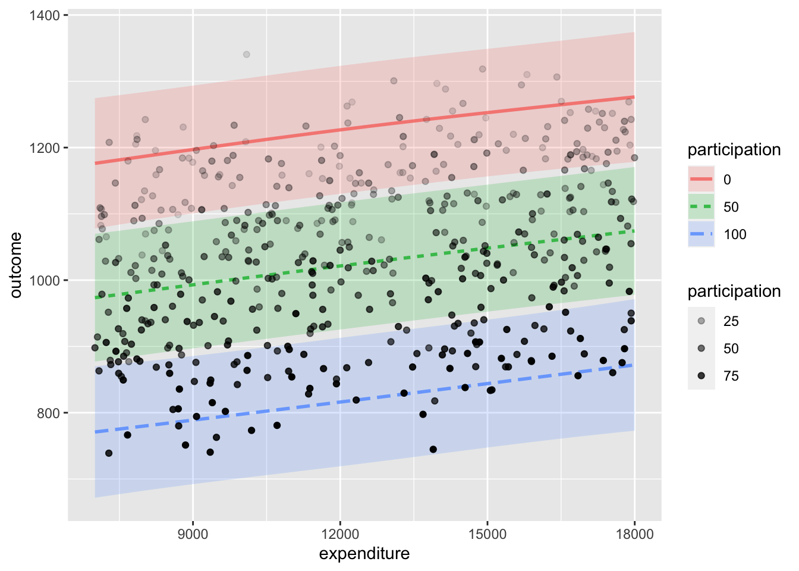
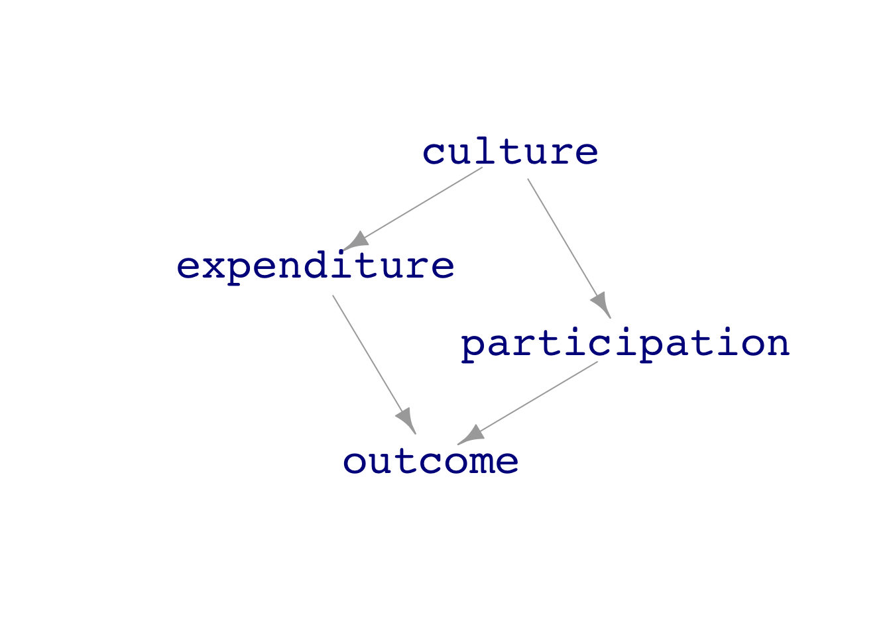
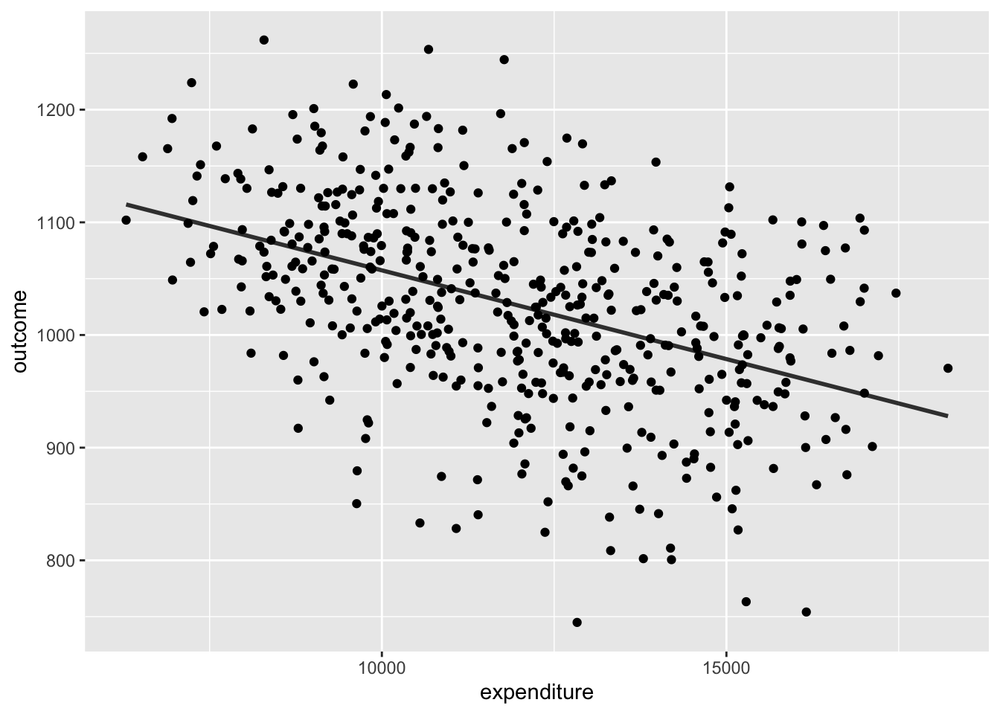

dag_school1expenditure ~ unif(7000, 18000)
participation ~ unif(1, 100)
outcome ~ 1100 + 0.01 * expenditure - 4 * participation + exo(50)dag_draw(dag_school1)
To demonstrate that the apparent relationship between an explanatory variable and a response variable – for instance, school expenditures and education outcomes – depends on the connections of the explanatory variable with covariates, let’s move away from the controversies of political issues and study DAGs, systems where everyone can agree exactly how the variables are connected.
A simulation implements a hypothesis: a statement about that might or might not be true about the real world. As a starting point for our simulation, let’s imagine that education outcomes increase with school expenditures in a very simple way: each $1000 increase in school expenditures per pupil results in an average increase of 10 points in the SAT score: an effect size of 0.01 points per dollar. Thus, the imagined relationship is:
\[\mbox{sat} = 1100 + 0.01 * \mbox{dollar expenditure}\]
Imagine that the fraction of students taking the SAT test also influences the average test score with an effect size of -4 sat points per percentage point. Adding this effect into the simulation leads to an imagined relationship of
\[\mbox{sat} = 1100 + 0.01 * \mbox{dollar expenditure} - 4 * \mbox{participation percentage} .\]
And, of course, there are other factors, but we’ll treat their effect as random with a typical size of \(\pm\) 50 points.
To complete the simulation, we’ll need to set values for dollar expenditures and participation percentage. We’ll let the dollar expenditures vary randomly from $7000 to $18,000 from one state to another and the participation percentage vary randomly from 1 to 100 percentage points.
Notice that in this simulation, both participation percentage and expenditures affect education outcomes, but there is no connection at all between the two explanatory variables. That is, the graphical causal network is that shown in Figure @ref(fig:school-sim-1).
dag_school1expenditure ~ unif(7000, 18000)
participation ~ unif(1, 100)
outcome ~ 1100 + 0.01 * expenditure - 4 * participation + exo(50)dag_draw(dag_school1)
We can generate simulated data and use the data to train models. ?@fig-school-data-1 shows the data and two different models.
Dat1 <- sample(dag_school1, size=500)
mod1_1 <- lm(outcome ~ ns(expenditure,2), data = Dat1)
mod1_2 <- lm(outcome ~ ns(expenditure,2) * participation, data = Dat1)
mod_plot(mod1_1, interval="prediction") %>%
gf_point(outcome ~ expenditure, data = Dat1)
mod_plot(mod1_2, interval="prediction") %>%
gf_point(outcome ~ expenditure, alpha=~participation, data = Dat1, inherit=FALSE)
outcome ~ expenditure - (b) The model with participation as a covariate: outcome ~ expenditure + participation Both models (a) and (b) show the same effect size for outcome with respect to expenditure.
outcome ~ expenditure - (b) The model with participation as a covariate: outcome ~ expenditure + participation Both models (a) and (b) show the same effect size for outcome with respect to expenditure.The relationship between outcome and expenditure can be quantified by the effect size, which appears as the slope of the function. You can see that when the explanatory variables are unconnected, as in Figure 1, the functions have the same slope.
Now consider a somewhat different simulation. Rather than expenditures and participation being unconnected (as in the causal diagram shown in Figure 1), in this new situation, we will posit a connection between the two explanatory variables. We’ll imagine that there is some broad factor, labeled “culture” in ?@fig-school-sim-2, that influences both the amount of expenditure and the participation in the tests used to measure education outcome. For instance, “culture” might be the importance that the community places on education or the wealth of the community.
dag_school2culture ~ unif(-1, 1)
expenditure ~ 12000 + 4000 * culture + exo(1000)
participation ~ (50 + 30 * culture + exo(15)) %>% pmax(0) %>%
pmin(100)
outcome ~ 1100 + 0.01 * expenditure - 4 * participation + exo(50)dag_draw(dag_school2)
participation and expenditure as a function of culture.Again, using data from this simulation, we can train models:
outcome ~ expenditures, which has no covariates.outcome ~ expenditures + participation, which includes participation as a covariate.?@fig-school-data-2 shows the data from the new simulation (which is the same in both subplots) and the form of the function trained on the data. Now model (a) shows a very different relationship between expenditures and outcome than model (b).


Since we know the exact mechanism in the simulation—outcome increases with expenditure—we know that model (b) matches the workings of the simulation while model (a) does not.
For the simulation where expenditure and participation share a common cause, failing to stratify on participation – that is, looking at the points in @fig:-school-data-2 (a) but ignoring color – gives an utterly different result than if the stratification includes participation. :::